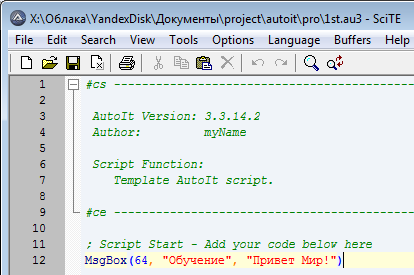
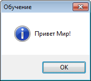
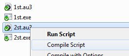
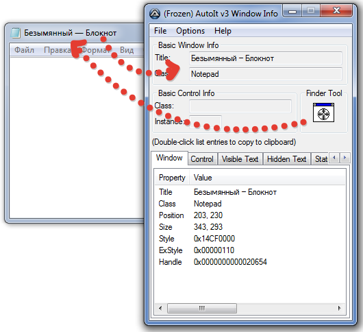
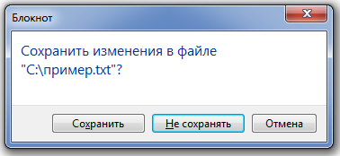
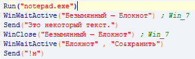

Конспект электронного хакактера, содержащий материалы для обучения скриптам AutoIt. Страница обновляется по мере изучения материала, версии сохраняться не будут. Интерфейс забран у предыдущего проекта, ибо показался более привлекательным.
База конспектов.Оглавление.
Начало.
Среда разработки. Любой текстовый редактор, компилятор autoit, несколько полезных утилит. Сначала устанавливаем компилятор, создаём скрипт .au3, редактируем. Как редактор в источнике рекомендуется SciTe.
Основной код там уже присутствовал, добавили 12 строчку. Её задача - вывести простое окно сообщения. Почти все функции принимают параметры. Функция MsgBox принимает три обязательных параметра - flag, title (заголовок окна сообщения) и message (само сообщение). Параметр flag указывает, каким образом должно быть отображено окно сообщения. В качестве этого параметра используем значение 64. Параметры title и message являются строковыми параметрами - при использовании строк в AutoIt, необходимо заключать их в двойные или одинарные кавычки. "Какой-то текст" и 'Какой-то текст' - работают одинаково. Значение параметра 0 означает, что необходимо отобразить простое окно сообщения с кнопкой OK. Значение флага, равное 64 означает, что окно сообщения необходимо отобразить вместе со значком информация (information icon).
Затем, чтобы можно было использовать наш простой скрипт где-нибудь ещё, компилируем его. Установка autoit добавляет все нужные функции в меню. Получаем .ехе, и запускаем его, когда необходимо.
Этого достаточно, чтобы понять, где и как придётся работать.
Глава 2. Первая практика.
Некоторые распространённые функции в следующем варианте. Открыть блокнот, написать некоторый текст, и сразу его закрыть без сохранения. У меня Win7, поэтому пример исходит из этого. Run("notepad.exe") запускает блокнот. Для этого нужно правильно указать имя исполняемого файла в параметре функции. При автоматизации приложений AutoIt может проверить заголовок окна, чтобы знать, с каким окном он должен работать. В блокноте заголовок окна очевидно Безымянный - Блокнот. AutoIt учитывает регистр букв при использовании заголовков окон, поэтому вы должны получить точный заголовок, лучший способ сделать это - использовать утилиту AutoIt v3 Window Info. Запустите AutoIt v3 Window Info из Меню Пуск \ AutoIt v3 \ AutoIt Window Info. Используя курсор захвата утилиты AutoIt v3 Window Info перетащите его на открытое ранее окно блокнота, чтобы получить необходимую вам информацию о нём. Информация, в которой мы заинтересованы - это заголовок окна.
Копируем это значение и используем его для функции WinWaitActive("Безымянный — Блокнот"). Предназначение её - убедиться, что окно активно. Далее используем функцию Send("Это некоторый текст"), которая отправит данный текст в открытое окно. Функция WinClose("Безымянный — Блокнот") попытается окно закрыть. В штатном случае программа предложит сохранить документ. WinWaitActive("Блокнот" , "Со&хранить") убедится в том, что активно диалоговое окно с одним из его вариантов. Существует возможность выбирать варианты, удерживая Alt и нажимая подчёркнутую букву варианта.
Функция Send("!н") поможет дать окну нужную букву, восклицательным знаком эмулируя нажатый Alt. Сохраняем, компилируем, запускаем, и наблюдаем автоматическое создание блокнота, набор текста и закрытие блокнота без сохранения. Этого достаточно для демонстрации способностей скрипта, хотя основные достоинства и возможности впереди.

Глава 3.
Глава 4.
Глава 5.
В начало документа.
Источник обучения.